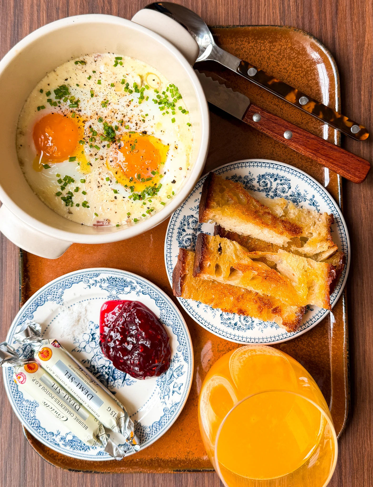
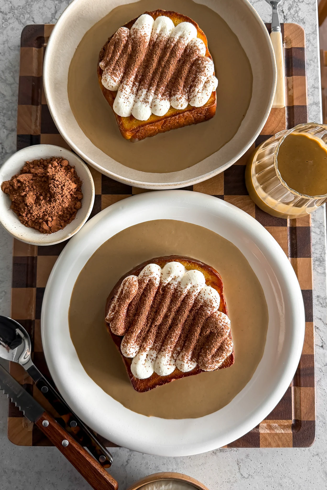
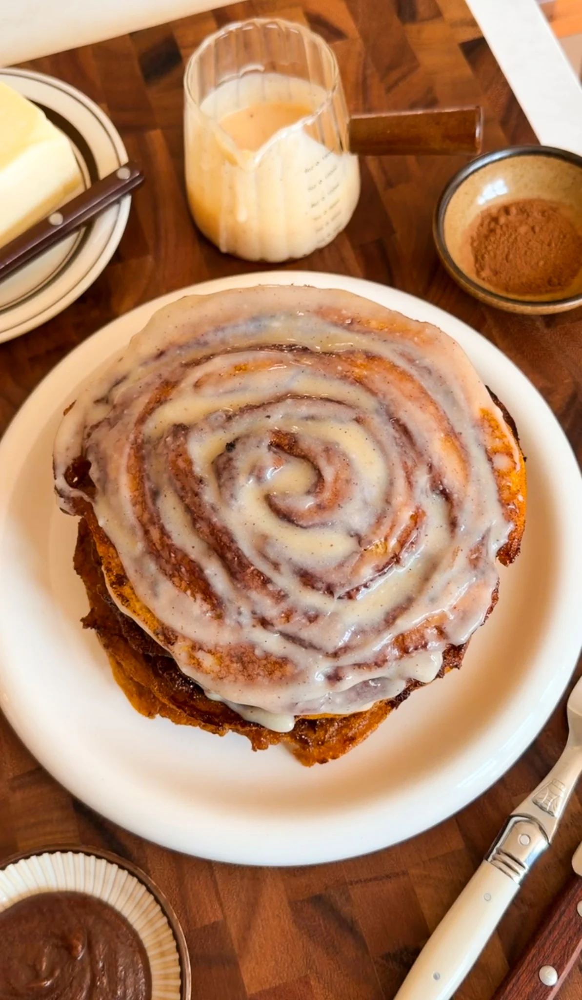

Eggs en Cocotte (French Baked Eggs)

Tiramisu French Toast with Coffee Anglaise

Breakfast Sliders – Community Goods Copycat

BREAKFAST
Prep Time: 15 mins
Cook Time: 20 mins
Total Time: 35 mins
If you love cinnamon rolls but don’t always have the patience for yeast and rolling dough, these are exactly what you need. It’s a fluffy pumpkin spice pancake with a spiral of buttery cinnamon sugar piped right into the batter as it cooks, so you get that same warm cinnamon roll flavor in every bite…

Eggs en Cocotte (French Baked Eggs)

Tiramisu French Toast with Coffee Anglaise
Breakfast Sliders – Community Goods Copycat